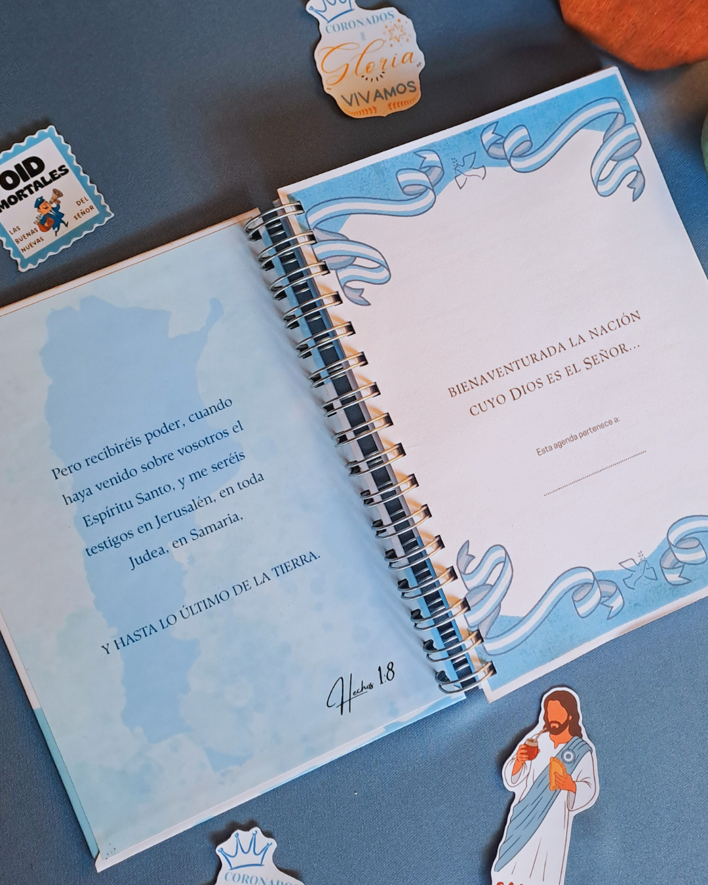
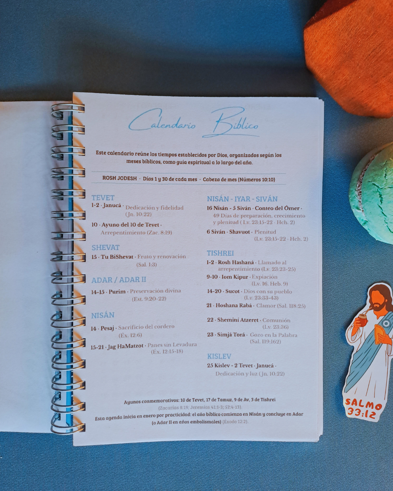
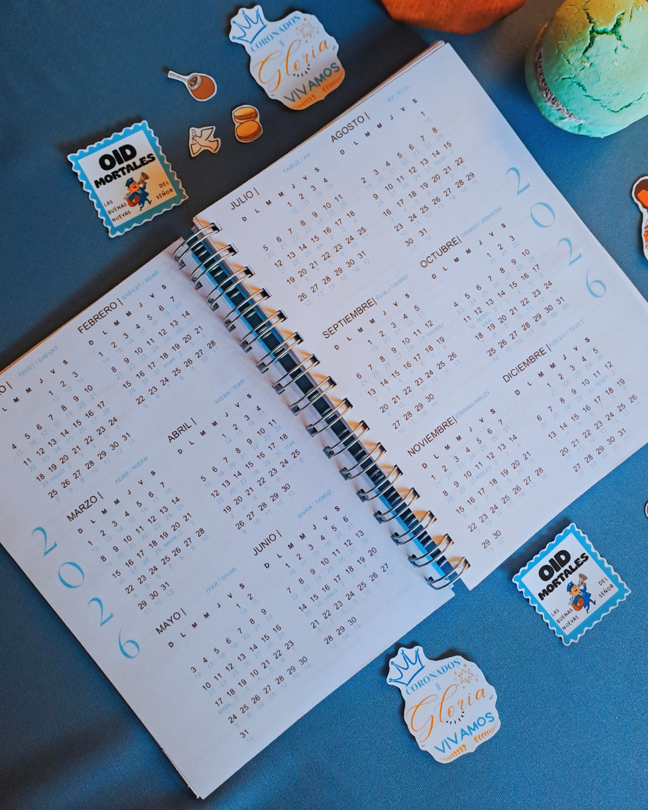
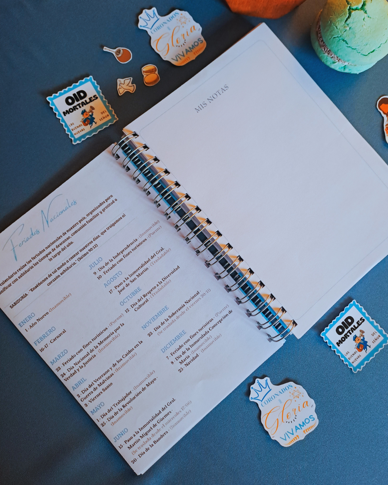
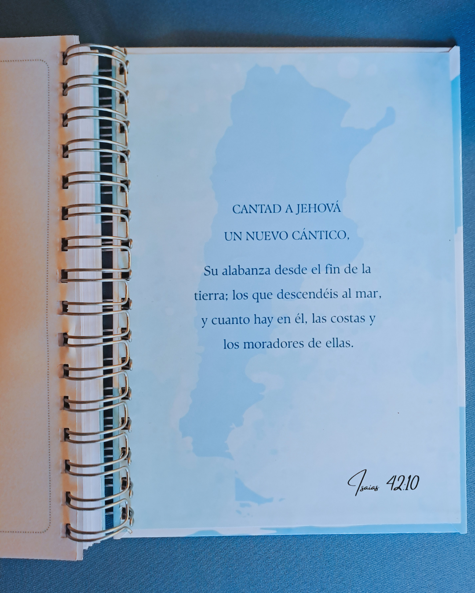

Agenda Sol de Justicia
$ 15.000

Agenda de Notas Perpetua A5 - Sol de Justicia (Edición Patria)

Inspiración, fe y raíces argentinas en un solo lugar.

Incluye Calendario Bíblico Completo: Una guía espiritual detallada con los tiempos establecidos por Dios, las fiestas bíblicas, sus significados y citas de referencia.

Calendario bíblico y gregoriano, integrando tiempos sagrados y cotidianos.

Calendario y Feriados Nacionales: Planificá tu año con todos los feriados oficiales de Argentina actualizados.
70 Hojas Rayadas Diseñadas: Páginas decoradas sutilmente, ideales para tus anotaciones diarias, reflexiones, apuntes de sermones o bitácora personal.

10 Hojas Libres para Notas: El espacio perfecto para desatar tu creatividad, hacer listas, metas o bosquejos.
Stickers: Un hermoso set con ilustraciones de fe y motivos bien argentinos (Jesús matero, empanadas, alfajores y frases que nos identifican).
Diseñada y fabricada 100% a mano con materiales de alta resistencia. Sus tapas duras garantizan durabilidad, el anillado metálico doble (Ring Wire) permite una apertura cómoda de 180° y sus hojas de alto gramaje evitan que la tinta se traspase.
Agregar al carrito